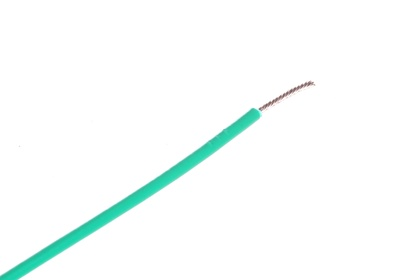
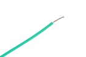
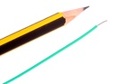

28 AWG Green Stranded Wire - W2G

Summary
Name: 28 AWG Green Stranded Wire
ID: WIRS-G28-G-STAN-01
Hex ID: W2G
WebPage: https://github.com/oomlout/oomlout-OOMP/wiki/WIRS-G28-G-STAN-01
Short URL: http://oom.lt/W2G
Revision History: https://github.com/oomlout/oomlout-OOMP/blob/master/parts/WIRS-G28-G-STAN-01/
| Type |
Size |
Color |
Description |
Index |
WIRS
Stranded Wire |
G28
28 AWG |
G
Green |
STAN
|
01
|
Images


About
This part is awaiting a description.
Specifications
| Info |
Value |
| Type |
Stranded Wire |
| Size |
28 AWG |
| Color |
Green |
Extra Details
Spotted a mistake, want to add more? Let us know oomp@oomlout.com
All images and resources are licensed [CC BY-SA] unless otherwise stated (ie. the datasheets)